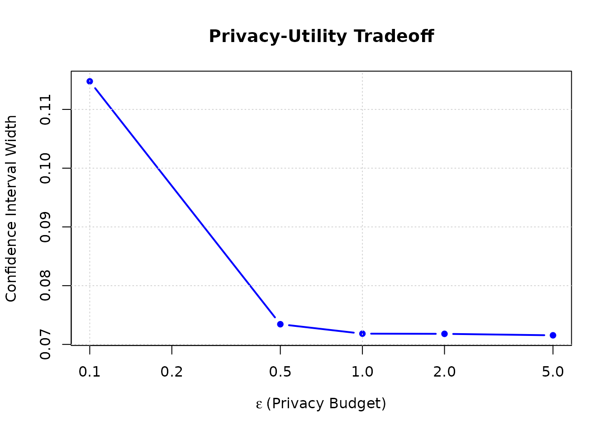
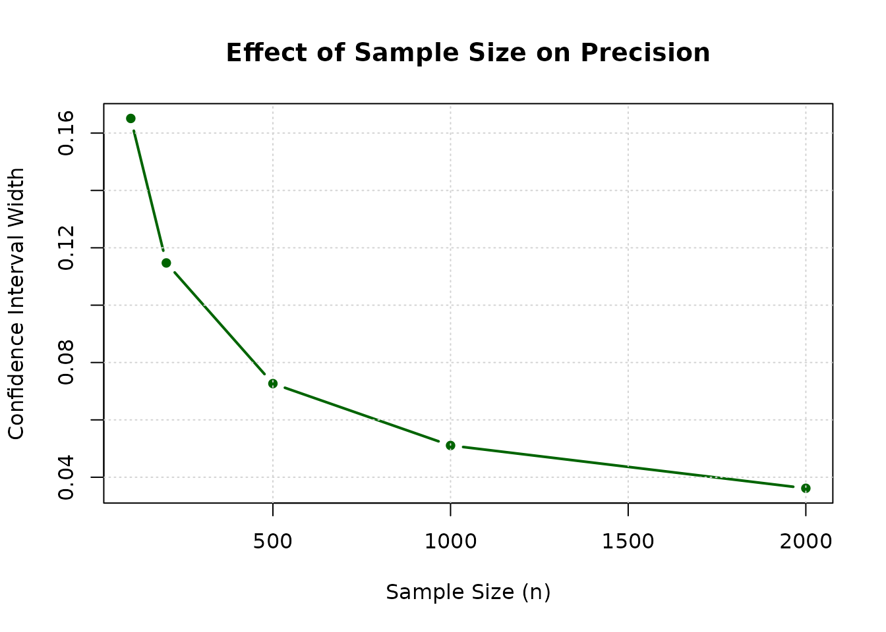

Introduction
Differential privacy (DP) provides a mathematical
framework for protecting individual privacy while allowing statistical
analysis of sensitive data. This vignette introduces equivalence testing
under differential privacy constraints using the cTOST
package.
Why Differential Privacy?
In many applications, data contain sensitive information:
- Clinical trials: Patient health records
- Epidemiological studies: Individual disease status
- Social science research: Personal demographics
- Corporate data: Employee information
Traditional anonymization techniques (removing names, aggregating) can be vulnerable to re-identification attacks. Differential privacy provides provable privacy guarantees.
Key Concepts
Differential Privacy Definition
A mechanism is -differentially private if for any two datasets and differing in a single individual:
for all possible outputs .
Interpretation:
- is the privacy budget (smaller = more privacy)
- Typical values:
- Adding/removing one person barely changes the output distribution
Equivalence Testing with DP
The Challenge
Standard equivalence testing assumes:
- Access to exact sample statistics
- Known sampling distributions
Under differential privacy:
- Statistics are noisy (Laplace noise added)
- Standard confidence intervals are invalid
- Need to reconstruct the underlying distribution
The DP-TOST Approach
The cTOST package implements a two-stage procedure (Pareek et al. 2026):
-
Privacy stage (done by data curator):
- Compute statistic from raw data
- Add Laplace noise
- Release privatized statistic
-
Testing stage (done by analyst):
- Use privatized statistic
- Reconstruct sampling distribution via moment matching + Monte Carlo
- Construct confidence interval
- Test equivalence
DP Proportion Testing
Use prop_test_equiv_dp() to test equivalence of
proportions under differential privacy.
One-Sample Example
Test whether a privatized proportion is equivalent to a reference range [0.3, 0.5].
Step 2: Add Laplace Noise
# Laplace scale parameter
scale <- 1 / (n * epsilon)
# Generate Laplace noise using inverse CDF method
u <- runif(1)
laplace_noise <- -scale * sign(u - 0.5) * log(1 - 2 * abs(u - 0.5))
# Privatized proportion
p_hat <- p_obs + laplace_noise
cat("Laplace scale:", round(scale, 6), "\n")
#> Laplace scale: 0.002
cat("Noise added:", round(laplace_noise, 4), "\n")
#> Noise added: -0.0042
cat("Privatized proportion:", round(p_hat, 4), "\n")
#> Privatized proportion: 0.3998Step 3: Run DP-TOST
result_one_sample <- prop_test_equiv_dp(
p_hat = p_hat,
n = n,
lower = 0.3,
upper = 0.5,
epsilon = epsilon,
alpha = 0.05,
B = 10000 # Monte Carlo replications
)
print(result_one_sample)
#> ✔ Accept equivalence
#> Equiv. Region: |-------------------------------|
#> Estim. Inter.: (------x------)
#> CI = (0.36453 ; 0.43652)
#>
#> Method: DP-TOST (proportion)
#> alpha = 0.05; Equiv. bounds = [0.3, 0.5]
#> epsilon = 1; B = 10000
#> n = 500; p_hat = 0.39985Interpretation:
- The test accepts equivalence despite the added noise
- Confidence interval accounts for both sampling variability and privacy noise
- Larger would give narrower intervals (less privacy, more utility)
Two-Sample Example
Test whether the difference between two privatized proportions falls within .
Generate Data
# True parameters
n1 <- 300
n2 <- 300
p1_true <- 0.52
p2_true <- 0.48
epsilon1 <- 1
epsilon2 <- 1
# Generate data
x1 <- rbinom(n1, 1, p1_true)
x2 <- rbinom(n2, 1, p2_true)
p1_obs <- mean(x1)
p2_obs <- mean(x2)
cat("True difference (p1 - p2):", p1_true - p2_true, "\n")
#> True difference (p1 - p2): 0.04
cat("Observed difference:", round(p1_obs - p2_obs, 4), "\n")
#> Observed difference: 0.06Add Noise and Test
# Add Laplace noise to each proportion
scale1 <- 1 / (n1 * epsilon1)
scale2 <- 1 / (n2 * epsilon2)
u1 <- runif(1)
u2 <- runif(1)
p1_hat <- p1_obs - scale1 * sign(u1 - 0.5) * log(1 - 2 * abs(u1 - 0.5))
p2_hat <- p2_obs - scale2 * sign(u2 - 0.5) * log(1 - 2 * abs(u2 - 0.5))
# Run two-sample DP-TOST
result_two_sample <- prop_test_equiv_dp(
p_hat = p1_hat,
n = n1,
p_hat2 = p2_hat,
n2 = n2,
lower = -0.1,
upper = 0.1,
epsilon = c(epsilon1, epsilon2),
alpha = 0.05,
B = 10000
)
print(result_two_sample)
#> ✖ Can't accept equivalence
#> Equiv. Region: |--------------0---------------|
#> Estim. Inter.: (----------x----------)
#> CI = (-0.01318 ; 0.12368)
#>
#> Method: DP-TOST (two-sample proportion)
#> alpha = 0.05; Equiv. bounds = [-0.1, 0.1]
#> epsilon = (1, 1); B = 10000
#> n = (300, 300); p_hat = (0.52509, 0.46997)Privacy-Utility Tradeoffs
Effect of Privacy Budget ()
Let’s explore how different values affect the test:
# Test with different epsilon values
epsilon_values <- c(0.1, 0.5, 1, 2, 5)
results <- data.frame(
epsilon = epsilon_values,
ci_lower = NA,
ci_upper = NA,
ci_width = NA,
decision = NA
)
for (i in seq_along(epsilon_values)) {
eps <- epsilon_values[i]
# Add noise
scale <- 1 / (n * eps)
u <- runif(1)
p_private <- p_obs - scale * sign(u - 0.5) * log(1 - 2 * abs(u - 0.5))
# Run test
test <- prop_test_equiv_dp(
p_hat = p_private,
n = n,
lower = 0.3,
upper = 0.5,
epsilon = eps,
alpha = 0.05,
B = 5000
)
results$ci_lower[i] <- test$conf.int[1]
results$ci_upper[i] <- test$conf.int[2]
results$ci_width[i] <- diff(test$conf.int)
results$decision[i] <- test$decision
}
print(results)
#> epsilon ci_lower ci_upper ci_width decision
#> 1 0.1 0.3415608 0.4563410 0.11478025 TRUE
#> 2 0.5 0.3690824 0.4425177 0.07343533 TRUE
#> 3 1.0 0.3689024 0.4407312 0.07182884 TRUE
#> 4 2.0 0.3698669 0.4416642 0.07179738 TRUE
#> 5 5.0 0.3689064 0.4404552 0.07154880 TRUEObservations:
- Smaller (more privacy) → Wider CIs, harder to accept equivalence
- Larger (less privacy) → Narrower CIs, easier to accept equivalence
- Privacy comes at the cost of statistical power
Visualize Privacy-Utility Tradeoff
plot(results$epsilon, results$ci_width,
type = "b", pch = 16, col = "blue", lwd = 2,
xlab = expression(epsilon ~ "(Privacy Budget)"),
ylab = "Confidence Interval Width",
main = "Privacy-Utility Tradeoff",
log = "x")
grid()
# Add interpretation zones
abline(h = 0.2, lty = 2, col = "red")
text(0.2, 0.25, "Harder to accept equivalence", col = "red", pos = 4)
text(5, 0.12, "Easier to accept equivalence", col = "darkgreen", pos = 2)
Sample Size Requirements
Under differential privacy, larger samples help both:
- Reduce sampling variability
- Reduce sensitivity (less noise needed)
# Test with different sample sizes
n_values <- c(100, 200, 500, 1000, 2000)
epsilon_fixed <- 1
sample_size_results <- data.frame(
n = n_values,
ci_width = NA
)
for (i in seq_along(n_values)) {
n_test <- n_values[i]
# Simulate data
x_sim <- rbinom(n_test, 1, 0.42)
p_sim <- mean(x_sim)
# Add noise
scale <- 1 / (n_test * epsilon_fixed)
u <- runif(1)
p_private <- p_sim - scale * sign(u - 0.5) * log(1 - 2 * abs(u - 0.5))
# Test
test <- prop_test_equiv_dp(
p_hat = p_private,
n = n_test,
lower = 0.3,
upper = 0.5,
epsilon = epsilon_fixed,
alpha = 0.05,
B = 5000
)
sample_size_results$ci_width[i] <- diff(test$conf.int)
}
print(sample_size_results)
#> n ci_width
#> 1 100 0.16510840
#> 2 200 0.11472171
#> 3 500 0.07265631
#> 4 1000 0.05106824
#> 5 2000 0.03614851
plot(sample_size_results$n, sample_size_results$ci_width,
type = "b", pch = 16, col = "darkgreen", lwd = 2,
xlab = "Sample Size (n)",
ylab = "Confidence Interval Width",
main = "Effect of Sample Size on Precision")
grid()
Key insight: Increasing sample size improves precision even under DP!
Practical Guidelines
Choosing Privacy Budget ()
Common values:
- : Strong privacy (e.g., highly sensitive medical data)
- : Moderate privacy (typical for research)
- : Weaker privacy (less sensitive applications)
Consider:
- Sensitivity of data: More sensitive → smaller
- Regulatory requirements: Some regulations specify
- Statistical power needs: Balance privacy and inference
- Privacy budget composition: Multiple queries share
Monte Carlo Replications
The B parameter controls precision:
- Default: B = 10,000 (good balance)
- Faster: B = 1,000 (less precise)
- More precise: B = 50,000 (slower)
# Quick test (less precise)
prop_test_equiv_dp(..., B = 1000)
# Precise test (slower)
prop_test_equiv_dp(..., B = 50000)Interpreting Results
DP equivalence tests return:
-
decision:TRUE= equivalence accepted -
conf.int: confidence interval -
estimate: Point estimate (privatized value) -
epsilon: Privacy budget used -
test_type: “one-sample” or “two-sample”
Important: The confidence interval accounts for BOTH:
- Sampling variability (from finite sample)
- Privacy noise (from Laplace mechanism)
Advanced Topics
Privacy Budget Composition
When performing multiple tests, privacy budgets add up:
Example: Testing 5 proportions with each uses total budget of .
Post-Processing Invariance
Any function of privatized output maintains DP:
- Good: Can perform multiple analyses on same privatized statistic
- Bad: Cannot add more queries without additional privacy budget
Differential Privacy for Means
The function tost_equiv_dp() tests the equivalence of
means under DP for bounded data in
.
The data curator privatizes the sample mean and the sample standard
deviation with Laplace noise of scales
and
respectively, i.e. the privacy budget
is split equally between the two statistics. The test reconstructs the
sampling distribution of the privatized statistics by Monte Carlo moment
matching. When the noise on the standard deviation is comparable to the
standard deviation itself (small
,
small
or a wide
),
the test is valid but conservative: its type I error is below the
nominal level and its power is reduced.
Key differences from proportion testing:
- Requires data to be bounded in
- Adds noise to both mean and SD
- More complex moment-matching optimization
Comparison with Non-Private Testing
Let’s compare DP and non-private equivalence testing:
# Same data, two approaches
n <- 500
p_true <- 0.42
x <- rbinom(n, 1, p_true)
p_obs <- mean(x)
# 1. Non-private TOST (if we had access)
# (Using approximation via normal test)
se_nonprivate <- sqrt(p_obs * (1 - p_obs) / n)
ci_nonprivate <- p_obs + qnorm(c(0.05, 0.95)) * se_nonprivate
# 2. DP-TOST
epsilon <- 1
scale <- 1 / (n * epsilon)
u <- runif(1)
p_private <- p_obs - scale * sign(u - 0.5) * log(1 - 2 * abs(u - 0.5))
result_dp <- prop_test_equiv_dp(
p_hat = p_private,
n = n,
lower = 0.3,
upper = 0.5,
epsilon = epsilon,
B = 10000
)
cat("Non-private CI width:", round(diff(ci_nonprivate), 4), "\n")
#> Non-private CI width: 0.0726
cat("DP CI width:", round(diff(result_dp$conf.int), 4), "\n")
#> DP CI width: 0.0726
cat("Privacy cost (width increase):",
round((diff(result_dp$conf.int) - diff(ci_nonprivate)) / diff(ci_nonprivate) * 100, 1), "%\n")
#> Privacy cost (width increase): 0 %Tradeoff: Privacy protection increases CI width by ~20-50% typically.
Summary
- Differential privacy provides provable privacy guarantees
- The Laplace mechanism adds calibrated noise to statistics
- DP-TOST performs equivalence testing on privatized statistics
-
Privacy budget
()
controls privacy-utility tradeoff
- Smaller = more privacy, wider CIs
- Larger = less privacy, narrower CIs
- Use
prop_test_equiv_dp()for proportion-based equivalence tests - Larger samples improve power even under DP
- Privacy comes at a cost: wider confidence intervals, reduced power
References
For methodological details:
- Pareek et al. (2026) for DP equivalence testing (preprint)
For differential privacy background:
- Dwork, C., & Roth, A. (2014). The algorithmic foundations of differential privacy. Foundations and Trends in Theoretical Computer Science, 9(3-4), 211-407.
For related methods:
- Average Equivalence Testing: Univariate for non-private mean testing
- Quantile Equivalence Testing for quantile-based methods